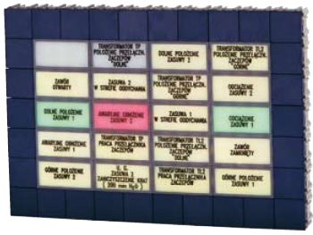

KSD-type signal boxes are designed for signalling status
of the facility. They are mounted in matrix frames; caps
of the signal boxes are flushed with the surface of the front
panels of STM boards and control desks. Sets of signal
boxes enclosed in aluminium frames can also be fixed
in metal, wood-like or other plates (e.g. cabinets, desktops
and top segments).
KSD-type signal boxes are designed for signalling status
of the facility. They are mounted in matrix frames; caps
of the signal boxes are flushed with the surface of the front
panels of STM boards and control desks. Sets of signal
boxes enclosed in aluminium frames can also be fixed
in metal, wood-like or other plates (e.g. cabinets, desktops
and top segments).
TECHNICAL DATA
- Control voltage: 18-24 V DC
- Power consumption: ca. 80 mA
- Colour of illumination: red, green, yellow
- Dimensions: 50.3 x 25.15 mm
- Outlets: rack and panel connector,
terminal strip or other types,
based on individual
arrangements
DESIGN
Each box incorporates three basic elements: a main body, a LED plate and a cap (non-transparent white). The surface of the cap has an inscription, sign or symbol plotted by screen printing or engraved. Another possibility is the use of transparent caps with inscriptions made on mat film or tracing paper placed underneath. Signal boxes are made as single units or in multiple sets in any configuration.
